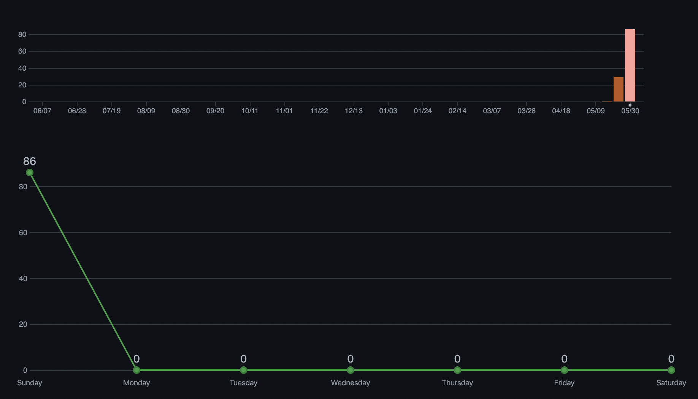
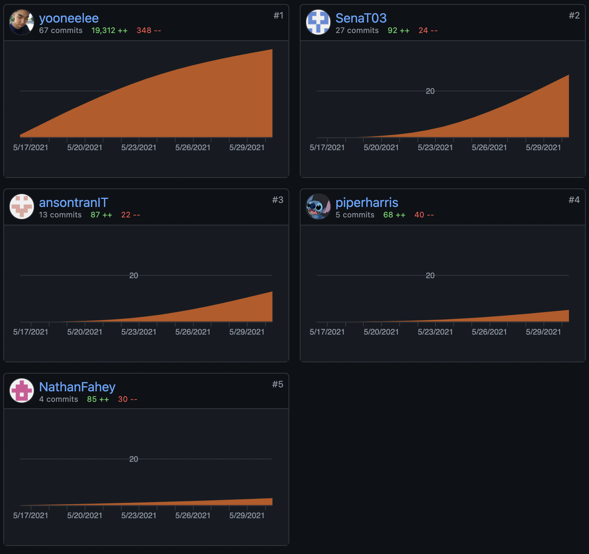

Tools
Github Website
EduTechGithub Repository
RepositoryGithub Repository Commit Trail
 The GitHub commit trail shows a true representation of the team’s performance. Yoonee was tasked with creating the GitHub repository and the website. Furthermore, Yoonee was the main designer of the website and ensured all the links were working. Sena also contributed to the design of the website. Therefore, it is natural that Yoonee and Sena had the most commits to the website as they were constantly fixing and updating the website. The other three members focused more on research and report writing. Thus, they have little commits as they only had to input what they had produced. The balance in the team was equal as half of the team focused on the web design and some research and report writing and the other half was responsible for the report writing and had minimal input in the web design. Majority of our commit activity occurred on the 30th of May as seen in the photo above.